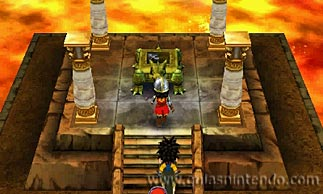
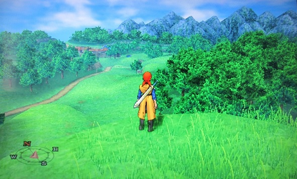

Dragon quest 7
Fragmentos de un mundo olvidado trata sobre la terquedad de sus dos protagonistas principales. De cómo el protagonista y el príncipe Kiefer se empeñan en indagar sobre la isla en la que habitan, incapaces de asimilar de que no existe más tierra que la que tienen bajo sus pies. Poco a poco descubrirán que el resto de continentes que se erigían solemnes en los océanos han desaparecido, y que mediante unas tablillas mágicas podrán viajar al pasado para visitarlos y expulsar al mal que los azota para devolverlos al presente. En esta bucólica fantasía se unirá la joven Mariel inicialmente, aunque el grupo engrosará paulatinamente con nuevos aventureros conforme progresemos en la aventura. Así comienza una larga travesía por un mundo dividido en dos periodos temporales llenos de personajes secundarios, encargos, misiones, monstruos y mazmorras que deberemos repetir tanto en su versión pasada como al devolverla a nuestro tiempo actual. Un juego enorme que nos atrapará por el encanto de su apartado técnico y por la pureza de su desarrollo clásico.
El grupo de personajes que encabezaremos será de lo más variopinto, pero de igual forma que los trabajos alteraban las clases en Final Fantasy V o Final Fantasy Tactics Advance, las más de cincuenta vocaciones proponen diferentes variantes a nuestros aventureros para que podemos personalizarlos según nos convenga. Por si fuera poco, podremos convertirnos en monstruos para luchar como ellos, además de poder hacernos amigos y reclutarlos para nuestra causa si los llevamos al "Monstruológico". En total hay más de doscientos y podremos enviarlos a misiones para que realicen tareas (como visitar cuevas en las que los humanos no son bien recibidos para conseguir nuevas tablillas mágicas) mientras nosotros desempeñamos otras ocupaciones. Por lo demás estamos ante un JRPG clásico, en el que los combates por turnos se encargan de dictaminar los enfrentamientos según nuestra estrategia a la hora de elegir las acciones y la configuración de nuestro equipo. Las mazmorras y los pueblos están conectados por un enorme escenario por el que nos moveremos con la libertad que nos permita el argumento.

Esta revisión para Nintendo 3DS resulta mucho más espectacular en el apartado técnico que lo que vimos en su día en PlayStation. Cada pueblo parece una detallada maqueta troquelada que podemos rotar a nuestro antojo con los botones superiores (geniales si activamos el efecto tridimensional en una New Nintendo 3DS), mientras que los modelados poligonales de los protagonistas y secundarios son una verdadera delicia. Lo mismo podemos decir de los monstruos, tan encantadores y divertidos como siempre. La única pega que podemos ponerle al apartado técnico es el la aparición repentina de algunos elementos (sobre todo árboles) cuando recorremos el mapa general. Se ha añadido la posibilidad de intercambiar tablillas de viajero mediante el StreetPass que nos permiten acceder a nuevas mazmorras y nuevo equipamiento. También se ha metido mano al sistema de juego para corregir los combates y la progresión durante el juego.
Dragon quest 8
Dragon Quest VIII: El periplo del Rey Maldito nos pone en la piel de un héroe que se embarca en un viaje junto su fiel compañero Yangus y el Rey Trode. Este último ha caído bajo una maldición y nuestro cometido desde el primer momento está bien claro, tenemos que perseguir a Dhoulmagus, el autor de tremenda fechoría. Por el camino nos vamos a topar con Jessica, una jóven que también busca vengarse de Dhoulmagus, así como también se unirá a nuestra misión Angelo, otro personaje que tiene cuentas pendientes con el archienemigo de esta aventura.
Nos encontramos en un mundo abierto en el que podemos decidir seguir la senda que nos lleva a la misión principal o en su lugar hacer otros encargos secundarios o simplemente dedicarnos a explorar para encontrar todos los secretos ocultos. Aunque los enfrentamientos contra enemigos son uno de los pilares de la aventura en ocasiones tendremos que farmear experencia extra para poder avanzar sin dificultades, especialmente cuando nos topamos con enfrentamientos contra jefes o rivales más difíciles de vencer. Una novedad importante en este sentido es que ahora vemos a los enemigos en el propio entorno, por lo que desaparecen los aburridos y molestos combates aleatorios que en muchas ocasiones no hacían más que fastidiar nuestros avances. A pesar de ser una característica clásica de juegos del género, cada vez más están desapareciendo los encuentros aleatorios, ya que entorpecen mucho el progreso.
Por otro lado, luchando y cumpliendo misiones adquirimos experiencia para los miembros de nuestro equipo y podemos utilizarla para administrar las habilidades o destrezas de cada personaje. La distinción de roles entre los personajes del grupo también es importante, ya que mientras alguno debe estar más enfocado a la protección o sanación, otros deben centrar su razón de ser en debilitar y realizar daño a los enemigos. Estudiar cómo funcionará nuestro equipo es algo de vital importancia si no lo queremos pasar mal en los combates más difíciles.

Como en todos los juegos del género el uso y la administración de objetos es importante, ya que los podemos utilizar durante el combate para recuperar salud o salir de estados alterados, por ejemplo. Por otra parte están los accesorios, los mismos que se pueden equipar a los miembros del grupo para que así sus estadísticas aumenten. Y en este apartado es donde entra la Alquimia, gracias a la cual podemos mezclar objetos para así crear otros más poderosos. Encontrar y aprender recetas es necesario si queremos tener un abanico mayor de posibilidades a la hora de utlizar esta característica.

Dragon quest 9
Encarnamos a un ángel de la guarda que vigila desde su posición que todo vaya bien en la aldea a la que le han ordenado proteger, y a cambio recibe la benevolescencia de los humanos, una especie de esencia que simboliza la gratitud y que sirve para hacer que un árbol sagrado florezca en el cielo. La trama arranca cuando por fin se reúne en el árbol toda la benevolesencia necesaria, pero eso ya tendréis que experimentarlo vosotros de primera mano.

Por otra parte, podría decirse que se trata de una trama de situaciones y bastante ramificada. En cada aldea tendremos que ayudar a los habitantes a solucionar un problema concreto que ha surgido, provocado por los acontecimientos principales de la aventura pero individuales en su desarrollo, formando así multitud de subtramas. Y ya que hemos hablado un poco del héroe al que manejaremos en la aventura, es importante destacar que por primera vez en DQ podremos seleccionar su aspecto al principio de la aventura como si de un Mii se tratase, eligiendo entre varias opciones para los diferentes rasgos de la cara, el pelo, la altura, el sexo, el nombre, etc., y todos las opciones con el inconfundible estilo de dibujo que caracteriza a Akira Toriyama. Esto sin duda es un gran acierto y una novedad interesante (hasta ahora lo más que nos habían permitido escoger, aparte del nombre, era el sexo del personaje en algún juego de la serie).
En cuanto a jugabilidad seguimos con un sistema por turnos clásico. Otra de las novedades que podremos encotrar sera que a la hora de equipar nuestras armas o armaduras estas se veran reflejas en el personaje. Por otro lado, tendremos la trama principal y misiones secundarias a lo largo de toda la aventura que nos aportaran experiencia y objetos de utilidad.

Dragon quest 10
Dragon Quest X está diseñado para ser jugado y disfrutado online, con un sistema de cuotas y suscripción, aunque tiene un pequeño componente offline. El usuario debe explorar Astoldia conectado, siendo ayudado y cooperando con otros jugadores gracias a la conexión a internet, que también nos servirá para guardar nuestros progresos y avances en la nube. Como es habitual en el género, podemos crearnos nuestro propio personaje, eligiendo entre diversas razas y características y disfrutar de una serie de misiones y eventos prefijados, así como de desafíos aleatorios y opcionales.

La historia nos llevará al pueblo de Etene, en el que nuestro protagonista vivirá con su hermano tras la pérdida de sus padres. Un día, el señor del Inframundo Hades Nergel aniquilará la plácida paz del mundo, obligándonos a tomar partido y reclamar nuestro sitio en la historia. Dragon Quest X ha contando varias expansiones y ampliaciones que han ido añadiendo nuevos escenarios y espacios al mundo de fantasía habitual de la serie. Este juego de la saga solo puede jugarse en Japón.
Dragon quest 11
Ante nosotros tenemos la historia de un joven que al realizar la ceremonia de mayoría de edad descubre que en su interior esconde un gran poder, es un héroe elegido para acabar con la oscuridad que amenazará al mundo de Erdrea. Tras ello es catalogado como el engendro oscuro, por lo que se ve perseguido por el ejercito del rey Cornalino. En dicho momento su viaje no solo tiene el fin de descubrir su verdadera razón de ser y sus orígenes, también luchar contra la oscuridad y contraatacar a aquellos que creen que es un ser de oscuridad. En la narración tienen lugar cantidad de sobresaltos y como no podía ser menos, tal y como ocurre en muchas otras entregas de la serie, el árbol de Yggdrasil es importante en la historia. En cualquier caso no vamos a contar mucho más sobre la misma, para que así cada uno la descubra por sí mismo las muchas sorpresas que depara.
En la aventura de nuestro héroe esperan grandes peligros, por lo que en su camino va conociendo otros personajes que se suman a su causa. Cada uno de ellos tiene un motivo para unirse a nuestras filas, pero el fin de todos ellos es hacer que la luz reine sobre la oscuridad. Erik, un ladrón peliazul es el primero de ellos, pero también están Serena y Verónica, una sanadora y una maga respectivamente. Un dicharachero trovador ambulante llamado Servando, así como el misterioso anciano Rob y la fantástica luchadora Jade. Cada uno de ellos tiene unas cualidades que lo hacen diferentes del resto, pero además cabe destacar que no todos pueden utilizar el mismo tipo de armas o equipamiento, por lo que todos y cada uno son igual de importantes en nuestra aventura.

El mundo de Erdrea nos presenta un gran territorio que explorar. En este mapa se dan cita ciudades, poblados, grandes campos, bosques, zonas heladas, cuevas y mazmorras, así como un sin fin de parajes. Dada la gran extensión del mapeado nos topamos con la posibilidad de recorrerlo a pie, pero también podemos hacerlo a caballo, para lo que tenemos que invocar a nuestro corcel en los postes que encontramos por las distintas regiones. De esta manera podemos adelantar camino mucho más rápido, pero además de los caballos existen otros tipos de monturas. Más adelante hablaremos de los combates, pero en algunos de ellos nos podemos topar con algunos enemigos brillantes, los cuales una vez derrotados pueden ser manejados para así acceder a localizaciones que de otra forma no podríamos. Además de ello no falta la típica magia de teleregreso que nos permite teletransportarnos a los lugares ya visitados, así como otros medios de transporte para recorrer grandes distancias.
Dadas nuestras grandes andanzas un punto de interés que visitamos con asiduidad son los diferentes campamentos que encontramos. En ellos podemos descansar para recuperarnos, pero también podemos acceder a puntos de guardado y a la forja sobre la que después haremos un mayor hincapié. Así mismo las tiendas y hostales de las diferentes ciudades y poblados también son lugares que no podemos perder de vista.
En el gran mundo que tenemos ante nosotros los monstruos campan a sus anchas, por lo que los vemos a
tiempo real sobre los diferentes parajes. Para comenzar a combatir contra ellos basta con acercarnos a
los mismos, momento en el que el título nos presenta una fórmula clásica de combates por turnos con
algunas peculiaridades bastante interesantes. Ante nosotros tenemos acciones básicos como realizar
ataques sencillos o emplear habilidades y conjuros, así como asignar una posición defensiva o utilizar
objetos. Esta última opción nos permite acceder a las bolsas de objetos de cada personaje en cuestión,
por lo que repartir los ítems es una tarea importante. De la misma forma existe una opción que es
equipo, la cual nos permite modificar el equipamiento de los personajes en pleno combate, ya que como
hemos avanzado antes cada uno de ellos es fiel a un tipo de armas en particular.

Videos
copyright © todos los derechos reservados